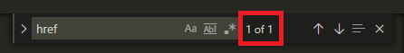

Как легко написать основу html
- Напишите ht
- И дальше нажмите html:5
Готово !
Вот пример того как это должно выглядить

После нажатия на Html:5 будет вот-так

Много курсоров
Если вам нужно поставить много курсоров в -разные- места, то зажмите alt и кликайте ЛКМ куда вам нужно
Но если места где вам нужно много курсоров находятся друг под другом, то:
- Кликните ЛКМ на верхнее ва нужное место
- Зажмите ctrl и alt
- Нажимайте стрелку вниз сколько вам надо
Подсчет количества страниц и ссылок
При ручных подсчетов старниц и ссылок могут возниикнуть ошибки. Для облегчения этой задачи ссылки лучше подсчитывать в
(VS Code), а страницы в (Totl Commander).
Начнем с ссылок. Для их подсчета нужно:
- Используем горячие клавиши ctrl + F
- Вводим - href и смотрим в место как показано на картинке

1ое число, это номер ссылки по счету на которой мы стоим.
2ое число, это количество всех ссылок